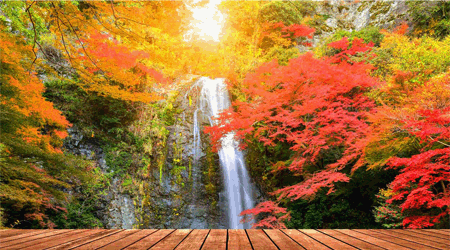
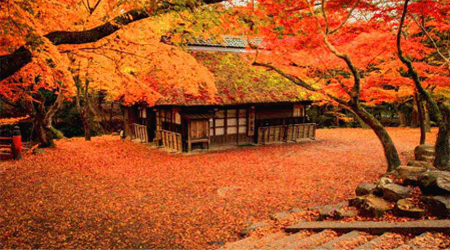
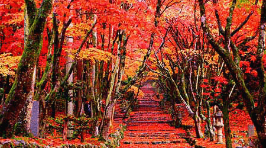

モミジユ
日本語
한국어
Chat
関西の紅葉
{ 大阪／京都／奈良／滋賀 ｝
関西での素敵な紅葉狩りを楽しみたい方でしたら…
関西で会える秋、あなたの思い出がさらに素敵になるように
ここでは様々な情報をあなたに提供します。
あなたにとって良い参考になることを願います。

大阪
京都

奈良

滋賀
秋にお似合う着物を探していますか?
紅葉狩りにぴったりの着物レンタルショップをご紹介します。
どんな着物を着たらいいか迷われるようでしたら、
心配しないでください。
コーディネーターとの1:1無料相談サービスがあります。
着物レンタルショップ・
コーディネーターサイト
紅葉狩りに持っていく
お弁当のことがお悩みですか?
紅葉の下で食べると最高！
世の中にはいろんなお弁当の
レシピがあります。 こちらは特に、それぞれの
好みやレベルに合わせてレシピが用意されています。
料理レシピの情報はこちらへ
This is a web development practice page created by Jiyu K.
Jiyu K © 2020
Instagram
|
facebook
|
Twitter
Topへ